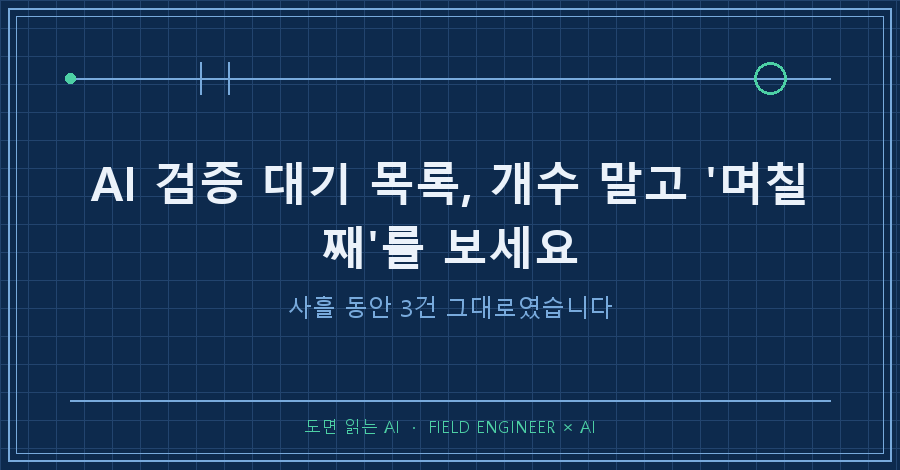
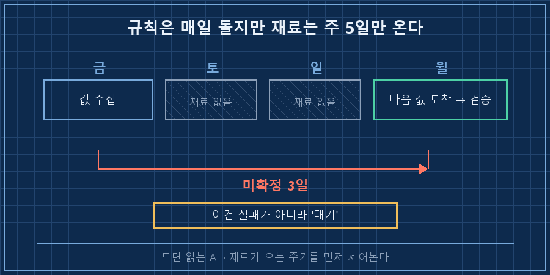
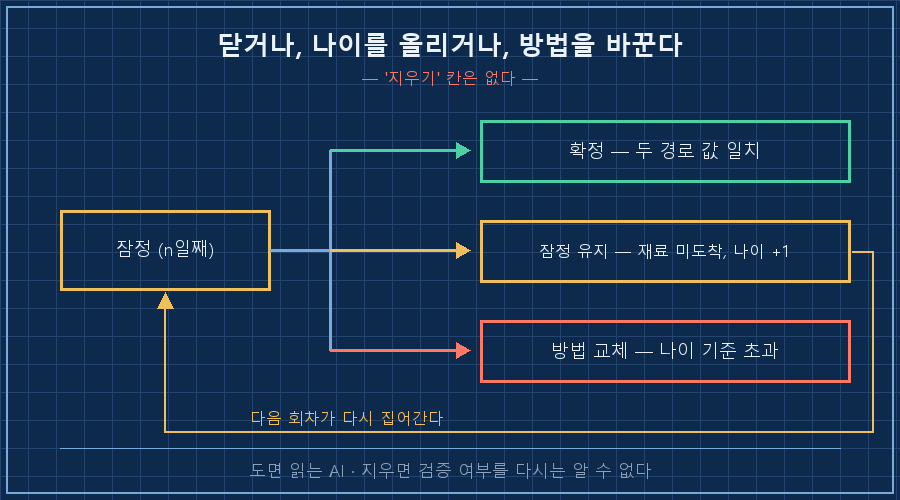
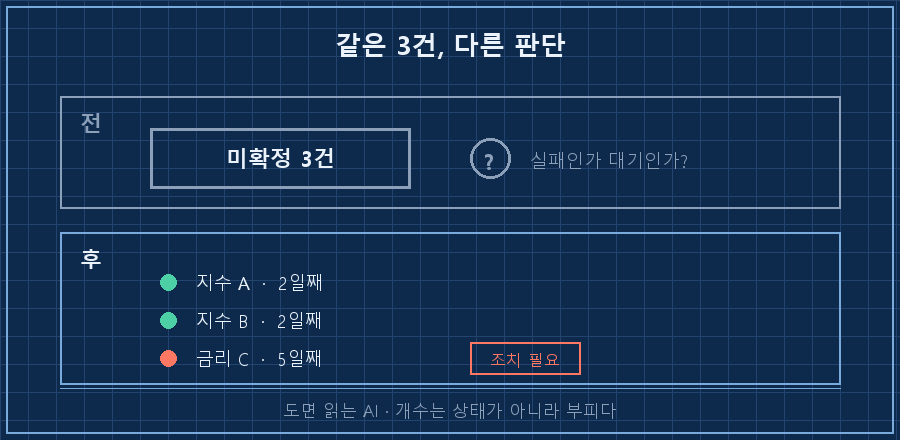

새벽에 도는 제 리포트에는 AI 검증 대기 칸이 하나 있습니다. 확인이 아직 안 끝난 값만 따로 모아두는 자리예요. 금요일 아침에 3건이었어요. 토요일에도 3건, 일요일에도 3건이었고요. 개수가 하나도 안 움직였습니다.
처음엔 규칙이 고장 났나 싶었는데, 아니었어요.
AI 검증 대기 목록이 안 줄어드는 이유는 두 가지인데 처방이 정반대입니다. 하나는 검증이 실패한 것이고, 다른 하나는 검증할 재료가 아직 도착하지 않은 것이에요. 앞은 방법을 고쳐야 하고 뒤는 손대면 안 됩니다. 그래서 저는 목록에 개수 대신 며칠째를 적게 했어요. 나이를 붙이니까 둘이 바로 갈라지더라고요.
2026년 9월 기준 기록입니다. 개인용 자동 리포트를 굴리면서 겪은 얘기지 무슨 판단을 권하는 글은 아니에요. 다만 AI한테 매일 바깥 숫자를 물어오게 시키고 계시다면, 그게 시세든 재고든 납기든 똑같이 걸리는 함정입니다.
저는 제조 쪽에서 제어랑 계측 일을 열다섯 해쯤 했습니다. 이 바닥에서 성적서를 받으면 값보다 날짜부터 봐요. 유효기간 지난 성적서는 숫자가 아무리 예뻐도 판정에 못 씁니다. 정작 제 리포트의 미확정 항목에는 그 날짜를 안 붙이고 있었어요..
검증이 실패한 게 아니라 재료가 없었습니다
제 리포트는 바깥에서 긁어온 값을 바로 확정하지 않습니다. 다음 날 나오는 값으로 거꾸로 계산해서 어제 값이 맞았는지 되짚고, 사람이 정리해 쓴 마감 기록으로 한 번 더 봅니다. 둘이 맞아떨어져야 확정이에요. 이걸 붙이고 첫날 7건이 한꺼번에 정리됐습니다. 4건은 소수점까지 맞아서 확정으로 올라갔고, 3건은 한쪽만 확보돼서 잠정에 남았어요.
문제는 그다음이었습니다. 그 3건이 사흘을 갔거든요.
이유는 허무할 만큼 단순했어요. 되짚기에 쓰는 재료가 다음 거래일에만 나오기 때문입니다. 금요일 값은 토·일에 되짚을 재료가 아예 생기지 않아요. 월요일 새벽이 와야 처음으로 검증이 가능해집니다. 규칙은 매일 도는데 재료는 주 5일만 오는 거죠.
[검증 대기] 3건
- 지수 A (금요일 값 / 2일째)
- 지수 B (금요일 값 / 2일째)
- 금리 C (금요일 값 / 2일째)
※ 되짚기 재료 미도착(주말). 다음 회차 재대조.그러니까 이건 실패가 아니라 대기였어요. 그런데 개수만 찍혀 있으면 둘이 똑같이 보입니다. "3건 미확정"이라는 문장은 규칙이 안 먹힌 건지 아직 차례가 안 온 건지를 하나도 알려주지 않아요. 저는 사흘째 되던 날에야 그걸 알아챘습니다.

그래서 목록에 나이를 붙였습니다
AI 검증 대기 목록에서 고친 건 딱 한 가지예요. 미확정 항목 옆에 "며칠째"를 같이 적게 했습니다. 그랬더니 같은 3건이 완전히 다르게 읽히더라고요.
| 보이는 것 | 진짜 원인 | 제 처방 |
|---|---|---|
| 2일째 미확정 | 재료가 아직 안 왔다 | 그대로 두고 다음 회차에 재대조 |
| 4일째 미확정 | 재료는 왔는데 대조가 안 붙었다 | 확인 경로를 하나 더 뚫는다 |
| 8일째 미확정 | 이 항목은 이 방법으로는 못 닫는다 | 방법을 바꾸거나 항목을 내린다 |
기준은 제 리포트가 도는 주기에 맞춘 겁니다. 하루 한 번 도니까 사흘이 넘어가면 주말을 감안해도 재료는 왔다는 뜻이거든요. 매주 도는 자동화라면 이 숫자는 당연히 달라져야 해요.
나이를 붙이고 나서 좋았던 건, 제가 규칙을 덜 만들게 됐다는 점입니다. 그전엔 목록이 안 줄면 뭔가 또 고쳐야 할 것 같아서 규칙을 자꾸 늘렸어요. 실제로 엿새 동안 방법론 규칙을 여섯 번 신설했습니다. 그중 한 번은 "마감 기록을 1순위 소스로 쓴다"는 규칙을 만들고 그걸 지켰는데도 다음 날 5건이 또 틀렸어요. 처방이 원인의 절반만 짚었던 거죠.. 나이 표기를 붙인 뒤로는 신설 0건인 날이 이어졌습니다. 대기 중인 걸 실패로 오독하지 않으니 고칠 일이 없었던 거예요.
재료 하나가 없어도 닫히는 길을 하나 더 뚫었습니다
월요일 새벽에 잠정 3건 중 2건이 닫혔습니다. 그런데 닫힌 방식이 원래 규칙이랑 달랐어요.
원래 규칙은 "되짚기 + 사람이 쓴 마감 기록" 조합이었는데, 이 2건은 마감 기록을 끝내 못 찾았습니다. 대신 서로 다른 두 곳에서 각각 되짚은 값이 소수점까지 똑같이 나왔어요. 그래서 그걸로 확정 처리했습니다.
③ 잠정 3건 중 2건 해소
- 마감 기록 없음 → 두 제공자의 독립 되짚기 값이 일치 → 확정
- 남은 1건은 재료 미도착 → 잠정 유지여기서 배운 게 하나 있어요. 확인 경로를 두 종류로 못 박아두면, 그중 하나가 없는 날엔 아무것도 못 닫습니다. 중요한 건 정해진 조합이 아니라 서로 따라 틀리지 않는 방법 두 개를 확보하는 거였어요. 같은 화면을 두 번 읽는 건 두 개가 아니고, 다른 곳에서 각각 계산한 값 두 개는 두 개가 맞습니다. 조합을 열어두니까 재료 하나가 빠져도 길이 남더라고요!
억지로 확정하면 안 되는 날도 있어요
같은 날 정반대 판정도 나왔습니다. 금요일 값 6개는 소스마다 전부 달랐어요. 특히 변동성 지표 하나는 방향까지 반대였습니다. 오른 걸로 적힌 곳과 내린 걸로 적힌 곳이 같이 있었던 거죠.
여기서 다수결로 하나 고르고 싶은 마음이 들었는데, 안 했습니다. 되짚을 재료 자체가 아직 없는 상태에서 고르면 그냥 찍는 거니까요. 6건 전부 잠정 유지로 두고 나이만 하루 올렸어요. 억지로 확정한 값은 다음 날 틀린 게 발견돼도 이미 리포트 본문에 사실처럼 박혀 있습니다. 잠정으로 남은 값은 다음 회차가 알아서 다시 집어가고요. 여러분도 확인 못 한 값을 일단 지워버리고 계시지는 않나요? 지우면 그게 검증됐는지 아닌지를 다시는 알 수 없게 되더라고요.
재밌는 건, 이렇게 바깥 값이 엿새 동안 열일곱 번 정정되는 동안 제가 직접 갖고 있는 표에서 계산한 합계는 23일 연속 1원까지 맞았다는 겁니다. AI가 틀린 건 계산이 아니었어요. 수집이었습니다.

자주 묻는 질문
Q. 미확정 항목을 리포트에 그냥 실어두면 읽는 사람이 헷갈리지 않나요?
라벨이 붙어 있으면 안 헷갈리더라고요. 오히려 확정처럼 실려 있다가 나중에 조용히 바뀌는 쪽이 훨씬 위험합니다. 저는 값 옆에 '잠정'과 며칠째인지를 같이 적어둡니다. 그러면 읽는 사람이 그 값으로 뭘 결정할지 스스로 판단할 수 있어요.
Q. 나이 기준을 며칠로 잡아야 하나요?
자동화가 도는 주기와 재료가 오는 주기, 두 개를 비교해서 잡으시면 됩니다. 저는 하루 한 번 도는데 재료는 주 5일만 와서 사흘을 경계로 잡았어요. 중요한 건 숫자 자체가 아니라 기준이 박혀 있는가예요. 기준이 없으면 오래된 미확정과 갓 생긴 미확정이 목록에서 똑같이 한 줄을 차지합니다.

AI 검증 대기 목록의 개수는 상태가 아니라 그냥 부피예요. 3건이 사흘째 그대로일 때 저는 규칙을 고치려고 달려들었는데, 정작 필요한 건 달력을 한 번 보는 거였습니다.. 다음 편에서는 이 되짚기를 자동으로 돌리면서 소스가 바뀔 때마다 조용히 어긋나던 부분을 어떻게 잡았는지 적어볼게요!
잠정으로 남겨둔 값이 실제로 며칠 만에 닫혔는지, 그 회차 기록은 makefield.ai에 올려둡니다.
태그: #AI검증대기 #AI미확정데이터 #AI검증지연 #AI데이터확정 #AI숫자검증 #AI교차검증 #AI결과물검수 #AI리포트 #AI데이터수집 #자동화검증 #AI에게일시키기 #AI판단검증 #AI기록관리 #개인AI에이전트 #도면읽는AI